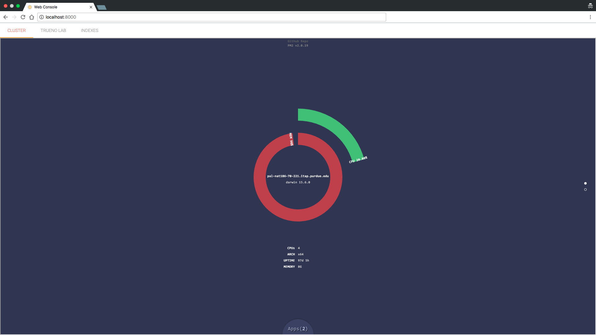

Quick Start
You can get started with Trueno pretty easy and fast. You just need a few dependencies:
Dependencies
- Java 8 or later
- Node.js 6 with npm or later
- tar and unzip
Installing and running Trueno
First, install Trueno globally from npm:
> npm install -g truenoDownload and install internal components:
> trueno setupRun trueno single instance:
> trueno start
Thats it! you should have Trueno up and running by now. Go to your browser to visit the web console at:
http://localhost:8000
You should see the following web page:
